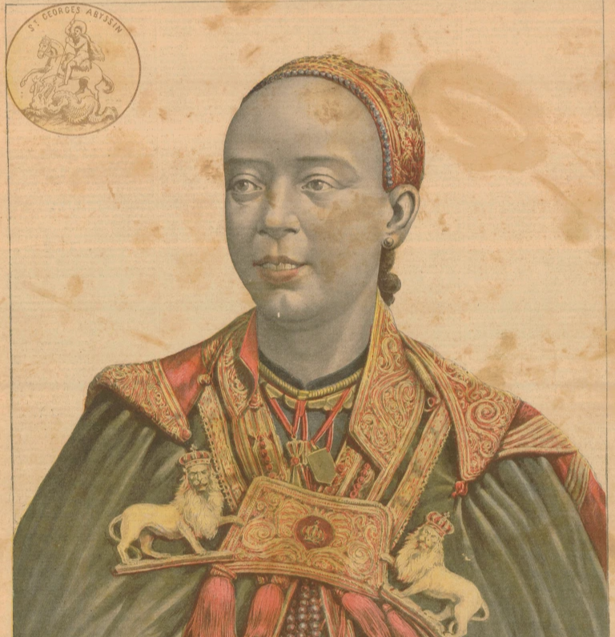

The region where Addis Ababa is founded is called Finfinne, or Natural Springs, by the local Oromo population; it is an area rich with fauna and flora. In the southwest, can be found Mount Wachacha, and in the north Mount Entoto. Before the foundation of Addis Ababa, Emperor Menelik II and the empress Taytu Betul were installed in the area of Mount Entoto as it was used a military base for operations in the south of the realm; however that area had a rude climate, was cold, and very windy. So the imperial couple used to visit the thermal sources of Filwoha, hot mineral springs, located at a lower altitude.
Taytu Betul:
In 1886, while Empress Taytu Betul was admiring the landscape, she saw a flower of rare beauty. Enchanted by the nice climate, she asked her spouse,
Emperor Menelik II, to build her a house in the area. Menelik II agreed and promised Taytu to build her a residence there. The choice of the precise
location of Addis Ababa followed the prophecy of Menelik II's grandfather, Sahle Selassie, Negus of Shewa from 1813 to 1847. During a game of chess, Sahle Selassie declared:
“This country is covered with scrub and vegetation, but the day will come when my grandson will build a house here, and will found a city.” Menelik II founded the city at the exact location
where his grandfather was practicing fencing. The name was Empress Taytu's choice: she had been stunned by that beautiful flower she had never seen before, hence she named the city Addis Ababa,
or “New Flower” in Amharic.

Emperor Menelik II:
Menelik expanded his wife's house to become the Imperial Palace which remains the seat of government in Addis Ababa today. Addis Ababa became
Ethiopia's capital when Menelik II became Emperor of Ethiopia. The town grew by leaps and bounds. One of Emperor Menelik II's contributions still
visible today is the planting of numerous eucalyptus trees along the city's streets. The city lies at an altitude of 2300 meters, and is a grassland biome.
Fascist Italy and Addis Ababa:
Following all the major engagements of their invasion, Italian troops from the colony of Eritrea entered Addis Ababa on 5 May 1936. Along with Dire Dawa, the city
had been spared the aerial bombardment (including the use of chemical weapons such as mustard gas) practiced elsewhere and its railway to Djibouti remained intact.
The city served as the Duke of Aosta's capital for the unified colony of Italian East Africa until 1941, when it was abandoned in favor of Amba Alagi and other redoubts
during the Second World War's East African Campaign. The city was liberated by Major Orde Wingate's Sudanese and Ethiopian Gideon Force in time to permit Emperor Haile Selassie's
return on 5 May 1941, five years to the day after he had left.
Haile Selassie and OAU
Following reconstruction, Haile Selassie helped form the Organisation of African Unity in 1963 and invited the new organization to keep its headquarters in the city. The OAU was dissolved in 2002 and replaced by the African Union (AU), also headquartered in Addis Ababa. The United Nations Economic Commission for Africa also has its headquarters in Addis Ababa. It is home to Addis Ababa University.
The Federation of African Societies of Chemistry (FASC) and Horn of Africa Press Institute (HAPI) are also headquartered in Addis Ababa. Ethiopia has often been called the original cradle of humanity due to various humanoid fossil discoveries like the Australopithecine Lucy. Recent DNA evidence have suggested origins in south central Ethiopian regions like present-day Addis Ababa: after analyzing the DNA of almost 1,000 people around the world, geneticists and other scientists claimed people spread from what is now Addis Ababa 100,000 years ago.